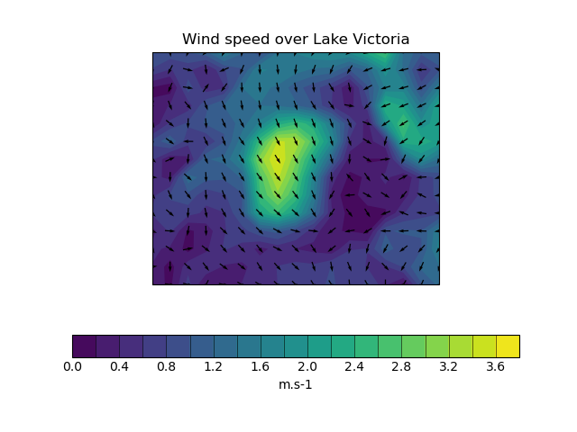

Note
Click here to download the full example code
Plotting wind direction using quiver¶
This example demonstrates using quiver to plot wind speed contours and wind direction arrows from wind vector component input data. The vector components are co-located in space in this case.
For the second plot, the data used for the arrows is normalised to produce arrows with a uniform size on the plot.
- 
import cartopy.crs as ccrs
import cartopy.feature as cfeat
import matplotlib.pyplot as plt
import numpy as np
import iris
import iris.coord_categorisation
import iris.quickplot as qplt
def main():
# Load the u and v components of wind from a pp file
infile = iris.sample_data_path("wind_speed_lake_victoria.pp")
uwind = iris.load_cube(infile, "x_wind")
vwind = iris.load_cube(infile, "y_wind")
ulon = uwind.coord("longitude")
vlon = vwind.coord("longitude")
# The longitude points go from 180 to 540, so subtract 360 from them
ulon.points = ulon.points - 360.0
vlon.points = vlon.points - 360.0
# Create a cube containing the wind speed
windspeed = (uwind ** 2 + vwind ** 2) ** 0.5
windspeed.rename("windspeed")
x = ulon.points
y = uwind.coord("latitude").points
u = uwind.data
v = vwind.data
# Set up axes to show the lake
lakes = cfeat.NaturalEarthFeature(
"physical", "lakes", "50m", facecolor="none"
)
plt.figure()
ax = plt.axes(projection=ccrs.PlateCarree())
ax.add_feature(lakes)
# Get the coordinate reference system used by the data
transform = ulon.coord_system.as_cartopy_projection()
# Plot the wind speed as a contour plot
qplt.contourf(windspeed, 20)
# Add arrows to show the wind vectors
plt.quiver(x, y, u, v, pivot="middle", transform=transform)
plt.title("Wind speed over Lake Victoria")
qplt.show()
# Normalise the data for uniform arrow size
u_norm = u / np.sqrt(u ** 2.0 + v ** 2.0)
v_norm = v / np.sqrt(u ** 2.0 + v ** 2.0)
plt.figure()
ax = plt.axes(projection=ccrs.PlateCarree())
ax.add_feature(lakes)
qplt.contourf(windspeed, 20)
plt.quiver(x, y, u_norm, v_norm, pivot="middle", transform=transform)
plt.title("Wind speed over Lake Victoria")
qplt.show()
if __name__ == "__main__":
main()
Total running time of the script: ( 0 minutes 0.702 seconds)